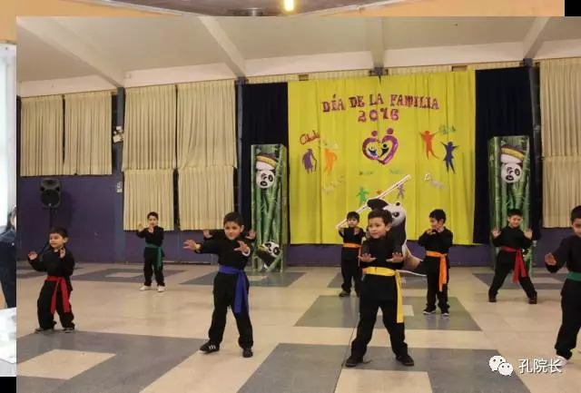

每日一篇——教学案例/我在智利麦田小学教汉语
 453
453
智利知多少
智利共和国（西班牙语：República de Chile）位于南美洲西南部，安第斯山脉西麓。东同阿根廷为邻，北与秘鲁、玻利维亚接壤，西临太平洋，南与南极洲隔海相望，是世界上地形最狭长的国家，国土面积756626平方公里。为南美洲国家联盟的成员国，在南美洲与阿根廷及巴西并列为ABC强国。（信息来自百度百科）
“我翻山越岭，跨过海洋，只为和你相见。”
抱着对志愿者工作的热爱和对汉语言教学的痴迷，以及对南美大陆文化的兴趣，不远万里来到了智利这片新大陆开始了我为期一年的志愿工作。从2016年4月到如今，时间飞逝。静下心来回顾，满心的幸福。
我是麦田小学的第一个志愿者，也是这个学校第一年开设中文课程，当我迈进这所学校的时候我就感受到了自己肩膀上的那份沉甸甸的担子和责任。
从未来过南美，这里的文化，这里的人，这里的一切都是新鲜的，初来乍到，我就如同一个新的生命去看待这个国家。对于学生来说，中国，中文，一个中国老师，可能这些小学生的小脑瓜里在想，中文课会是什么样的，这个老师会是什么样子的吧。对于这所学校来说，中文老师能为他们带来什么，能为这个学区奉献什么，能为学生和家长带来什么，这些都是新的，而对我来说，这里的生活，这里的学生，都是新的。
麦田小学是一所比较好的公立小学，学生素质相对于其他公立小学来讲是偏高的。我教授学校里八个年级的所有学生。南美国家普遍存在时间观念不强的特点，同时教学体系和国内差距很大，这就在教学上产生了跨文化交际的文化冲突。
智利公立小学每节课为90分钟，但是这90分钟是不可能被充分利用的。这就造成了当教师布置一个任务后，学生会十分拖沓地去完成教学课堂任务。因为我本科是教育学，所以在国内小学有着半年的教学经历。国内3分钟的任务在这里就要花费10分钟，甚至20分钟。因为我的课程是45分钟，学生总带着90分钟课程的思维来上我的课，习惯性的认为我所不值得任务会有大量的时间去完成，所以造成课堂十分懒散拖沓，每节课所能学到的知识非常有限。
这是自己在教学上遇到的以及需要面对的第一个问题。在面对这种问题的时候，我们能做的就是察言观色。不要急于提出自己的质疑，要看这边的老师是怎么做的。其实这里的老师都是将一节课程分为两个部分进行教学活动的安排。第一个45分钟进行授课，剩下的45分钟进行练习。因为我只有45分钟的课程，所以我在每个组第一节课教授新的知识，在第二个课时进行教学练习，同时因为智利公立学校的小学生没有家庭作业，每节课的课堂练习只能在课上完成。虽然每个班的课时有限，但是学生能够得到一些课后练习，整个课堂也不会松松散散。
自己不会说西语，这是在教学工作上的最大困难，小学生顽皮好动，自己刚上任的时候也是头痛。但是我们的汉语是博大精深的，在第一节课上我没有直接讲课，而是借助 PowerPoint 从汉字中的象形字入手，似乎每一个晦涩难懂的汉字都活了起来，人，火，马，羊，牛，山……学生会认识到原来汉字就是每一幅灵动的图形，表达出了无限的含义。
在这里是自己第二次在海外教授中文了，学校的校长给予了大力的支持。教学活动并没有遇到什么困难，所谓的文化冲击对于我这个老司机似乎也就是到个时差，调整调整我的“中国胃”。一切都按部就班。因为学生多，课时少，我花费了大量的时间去教他们怎样做笔记，怎样去听课。在每教完一课后都会花费大量的时间去进行汉字练习，自己用 word 做田子方格本子，打印好让学生描红和进行仿写。
第二个学期开始，中文教室终于修葺完毕，在第二学期开学之前花费了两个星期的时间对中文教室进行布置和设计。在设计的过程中，来自美国的英文项目教师 Susan 也在教室设计上提供了宝贵的建议。
麦田小学是智利全国上下唯一一所同时教授汉语，马普切语，英语和西班牙语的公立小学，正是由于这一点，在学校同智利教育部阿劳卡尼亚大区公立教育司签署中文教学合同时，得到了智利媒体的广泛关注和报道，如 CNN CHILE, TVN和24H等。
麦田小学很重视学生自身文化和学习素养的双重建设，并在这个方针下，展开了各种各样的活动。学校拥有各种各样的兴趣班和提高班即 Taller。学校拥有生物化学，中文，英美影视，英文拼写，跆拳道，足球，吉他等 taller。并且这些 Taller 片区局限于学校内的活动，在五月马普切新年时，吉他 Taller 班的学生就随同校长, 校主任以及部分老师对乡下的一所马普切小学进行了慰问交流演出。
学校也在儿童节的时候举行了家长学生亲子日和儿童日。
我是麦田小学的第一个守望者，守望的是中文的种子刚刚发出的嫩芽，在阿劳卡尼亚的特木科，希望这所学校的中文教室能把这个职责一年年传递下去，直到郁郁葱葱成一片森林。

作者简介：
李敏乐，上海外国语大学国际文化交流学院学生，师从郑振贤教授，于2016年4月赴智利特木科麦田小学担任汉语教师志愿者。